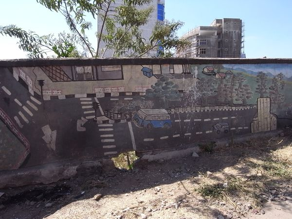

2012-01-07
～聖誕快樂～
都說這次旅行每每都遇上不對的時候，偏偏今天才是 Ethiopia 的聖誕節，就像很多年前香港的農曆新年，很多很多的地方，都放假關門了。包括 TOMOCA，買不到新鮮的咖啡，也不能再次嚐這裏的 macchiato。雖然街上大半店舖關了門，街上人流少，昨晚 Piaza 熱鬧景象變了清靜的街頭，但是聖誕節日的氣氛並不靠這些門面的東西，反而今天所到之處遇到的人，都會很喜悅地和你說聲聖誕快樂。
回港的班機要在黃昏才開出，時間多到不行，可以盡情地行路和乘坐當地公共交通。乘小巴已經變得十分容易，去 Entoto Mountains 的 Maryam Church 要轉很多次的小巴，但就很開心地遇到很多的好人幫助，根本不愁去不到回不來。
看完 Maryam Church 就回 Arat Kilo 然後行回去 Meskal Square，周圍行來行去回到 Piazza，才不過中午，打算在 Taitu Hotel 吃好的但一見菜單覺得很貴，想留點錢在機場買東西結果沒吃，成功用 4 Birr 去到機場，沾沾自喜慳咗好多錢可以勁買嘢，點都估唔到，機場的店也關門......
離開冷清的 Bole 機場，又再到二十四小時都這麼繁忙的 Dubai 機場轉機，一下子又回到摩登的地方。回到香港，不久後聽到有遊客在 Ethiopia 東北遇害的新聞，初聽時一心以為都是些邊境才發生的事，但原來卻是發生在 Danakil Depression，那個我最喜歡的地方。
一切都是時間和運氣的關係，當人們說一個地方很安全或很危險，都只是某時某地某人當下發生的事。Addis Ababa 旅館職員叫我在 Harar 千萬要小心，說那裏的人食 Khat 食上腦，又超多小偷。而 Harar 的導遊小伙子卻叫我千萬要小心 Somaliland 的人，說那裏的人都手持機槍。到我在 Somaliland 遇上的人和善到不行，反而沒有和我說小心 Djibouti 的人。到了 Djibouti，臨走一天導遊先生又提我回到 Ethiopia 要小心，說 They will kill for money。
Danakil 團友 Katrina 之前到過 Sudan，說那裏是她去過最好客最安全的地方，同一個地方，導遊 Negasi 說那裏極危險。若我們遲了十天才到 Danakil，一切的印象都會改變。一個地方是如何，每人都有他自己的感受，封存在一個獨有的時空。
Ethiopia 是個特別的地方，尤其是北面的有悠久歷史的地方，到現時一到節日還會有來自遠方的人前來朝聖，時間好像還停留在遠古時代。這仍然是比較貧窮的國家，和其他 國家一樣，有人沒得吃，同時有人大魚大肉。我在這裏感受到濃厚宗教氣色，吃了以後也不想再吃的 Injera，但又喝了以後都想喝的 macchiato，去了令我不枉此行的 Erta Ale。
從未試過像今次般預備了那麼多現金，更未試過卻原來要付更多。好像被上天作弄，大灑金錢，遇上不好的當地旅行社，遇上不好的日子。但我並沒有遇上會令我向 人說「那裏很危險」的事情，或者那其實是個好的安排。
～聖誕快樂～
都說這次旅行每每都遇上不對的時候，偏偏今天才是 Ethiopia 的聖誕節，就像很多年前香港的農曆新年，很多很多的地方，都放假關門了。包括 TOMOCA，買不到新鮮的咖啡，也不能再次嚐這裏的 macchiato。雖然街上大半店舖關了門，街上人流少，昨晚 Piaza 熱鬧景象變了清靜的街頭，但是聖誕節日的氣氛並不靠這些門面的東西，反而今天所到之處遇到的人，都會很喜悅地和你說聲聖誕快樂。
回港的班機要在黃昏才開出，時間多到不行，可以盡情地行路和乘坐當地公共交通。乘小巴已經變得十分容易，去 Entoto Mountains 的 Maryam Church 要轉很多次的小巴，但就很開心地遇到很多的好人幫助，根本不愁去不到回不來。
看完 Maryam Church 就回 Arat Kilo 然後行回去 Meskal Square，周圍行來行去回到 Piazza，才不過中午，打算在 Taitu Hotel 吃好的但一見菜單覺得很貴，想留點錢在機場買東西結果沒吃，成功用 4 Birr 去到機場，沾沾自喜慳咗好多錢可以勁買嘢，點都估唔到，機場的店也關門......
離開冷清的 Bole 機場，又再到二十四小時都這麼繁忙的 Dubai 機場轉機，一下子又回到摩登的地方。回到香港，不久後聽到有遊客在 Ethiopia 東北遇害的新聞，初聽時一心以為都是些邊境才發生的事，但原來卻是發生在 Danakil Depression，那個我最喜歡的地方。
一切都是時間和運氣的關係，當人們說一個地方很安全或很危險，都只是某時某地某人當下發生的事。Addis Ababa 旅館職員叫我在 Harar 千萬要小心，說那裏的人食 Khat 食上腦，又超多小偷。而 Harar 的導遊小伙子卻叫我千萬要小心 Somaliland 的人，說那裏的人都手持機槍。到我在 Somaliland 遇上的人和善到不行，反而沒有和我說小心 Djibouti 的人。到了 Djibouti，臨走一天導遊先生又提我回到 Ethiopia 要小心，說 They will kill for money。
Danakil 團友 Katrina 之前到過 Sudan，說那裏是她去過最好客最安全的地方，同一個地方，導遊 Negasi 說那裏極危險。若我們遲了十天才到 Danakil，一切的印象都會改變。一個地方是如何，每人都有他自己的感受，封存在一個獨有的時空。
Ethiopia 是個特別的地方，尤其是北面的有悠久歷史的地方，到現時一到節日還會有來自遠方的人前來朝聖，時間好像還停留在遠古時代。這仍然是比較貧窮的國家，和其他 國家一樣，有人沒得吃，同時有人大魚大肉。我在這裏感受到濃厚宗教氣色，吃了以後也不想再吃的 Injera，但又喝了以後都想喝的 macchiato，去了令我不枉此行的 Erta Ale。
從未試過像今次般預備了那麼多現金，更未試過卻原來要付更多。好像被上天作弄，大灑金錢，遇上不好的當地旅行社，遇上不好的日子。但我並沒有遇上會令我向 人說「那裏很危險」的事情，或者那其實是個好的安排。
昨夜興旺的攤檔關閉
Enotot Maryum Church
由 Entoto 看 Addis Ababa


機場店舖也關閉
聖誕咭
Lalibela Music
咖啡
由 Jijiga 往 Wajaale 途中路邊買的羊奶
Somaliland 買的刊物
Ethiopia 當地人用來刷牙的樹枝
電話增值卡
Ethiopia 官方語 Amharic